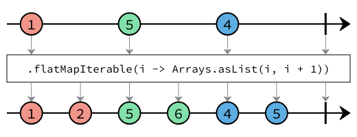

Interface TransformingOperators<T>
- Type Parameters:
T- The type of the elements that this stream emits.
- All Known Subinterfaces:
ProcessorBuilder<T,,R> PublisherBuilder<T>
The documentation for each operator uses marble diagrams to visualize how the operator functions. Each element flowing in and out of the stream is represented as a coloured marble that has a value, with the operator applying some transformation or some side effect, termination and error signals potentially being passed, and for operators that subscribe to the stream, an output value being redeemed at the end.
Below is an example diagram labelling all the parts of the stream.

-
Method Summary
Modifier and TypeMethodDescription<S> TransformingOperators<S>flatMap(Function<? super T, ? extends PublisherBuilder<? extends S>> mapper) Map the elements to publishers, and flatten so that the elements emitted by publishers produced by themapperfunction are emitted from this stream.<S> TransformingOperators<S>flatMapCompletionStage(Function<? super T, ? extends CompletionStage<? extends S>> mapper) Map the elements toCompletionStage, and flatten so that the elements the values redeemed by eachCompletionStageare emitted from this stream.<S> TransformingOperators<S>flatMapIterable(Function<? super T, ? extends Iterable<? extends S>> mapper) Map the elements toIterable's, and flatten so that the elements contained in each iterable are emitted by this stream.<S> TransformingOperators<S>flatMapRsPublisher(Function<? super T, ? extends org.reactivestreams.Publisher<? extends S>> mapper) Map the elements to publishers, and flatten so that the elements emitted by publishers produced by themapperfunction are emitted from this stream.<R> TransformingOperators<R>Map the elements emitted by this stream using themapperfunction.
-
Method Details
-
map
Map the elements emitted by this stream using themapperfunction.
- Type Parameters:
R- The type of elements that themapperfunction emits.- Parameters:
mapper- The function to use to map the elements.- Returns:
- A new stream builder that emits the mapped elements.
-
flatMap
<S> TransformingOperators<S> flatMap(Function<? super T, ? extends PublisherBuilder<? extends S>> mapper) Map the elements to publishers, and flatten so that the elements emitted by publishers produced by themapperfunction are emitted from this stream.
This method operates on one publisher at a time. The result is a concatenation of elements emitted from all the publishers produced by the mapper function.
Unlike
flatMapRsPublisher(Function)}, the mapper function returns aorg.eclipse.microprofile.reactive.streamstype instead of anorg.reactivestreamstype.- Type Parameters:
S- The type of the elements emitted from the new stream.- Parameters:
mapper- The mapper function.- Returns:
- A new stream builder.
-
flatMapRsPublisher
<S> TransformingOperators<S> flatMapRsPublisher(Function<? super T, ? extends org.reactivestreams.Publisher<? extends S>> mapper) Map the elements to publishers, and flatten so that the elements emitted by publishers produced by themapperfunction are emitted from this stream.
This method operates on one publisher at a time. The result is a concatenation of elements emitted from all the publishers produced by the mapper function.
Unlike
flatMap(Function), the mapper function returns aorg.eclipse.microprofile.reactive.streamsbuilder instead of anorg.reactivestreamstype.- Type Parameters:
S- The type of the elements emitted from the new stream.- Parameters:
mapper- The mapper function.- Returns:
- A new stream builder.
-
flatMapCompletionStage
<S> TransformingOperators<S> flatMapCompletionStage(Function<? super T, ? extends CompletionStage<? extends S>> mapper) Map the elements toCompletionStage, and flatten so that the elements the values redeemed by eachCompletionStageare emitted from this stream. If the element isnull, this operation should be failed with aNullPointerException.
This method only works with one element at a time. When an element is received, the
mapperfunction is executed, and the next element is not consumed or passed to themapperfunction until the previousCompletionStageis redeemed. Hence this method also guarantees that ordering of the stream is maintained.- Type Parameters:
S- The type of the elements emitted from the new stream.- Parameters:
mapper- The mapper function.- Returns:
- A new stream builder.
-
flatMapIterable
<S> TransformingOperators<S> flatMapIterable(Function<? super T, ? extends Iterable<? extends S>> mapper) Map the elements toIterable's, and flatten so that the elements contained in each iterable are emitted by this stream.
This method operates on one iterable at a time. The result is a concatenation of elements contain in all the iterables returned by the
mapperfunction.- Type Parameters:
S- The type of the elements emitted from the new stream.- Parameters:
mapper- The mapper function.- Returns:
- A new stream builder.
-